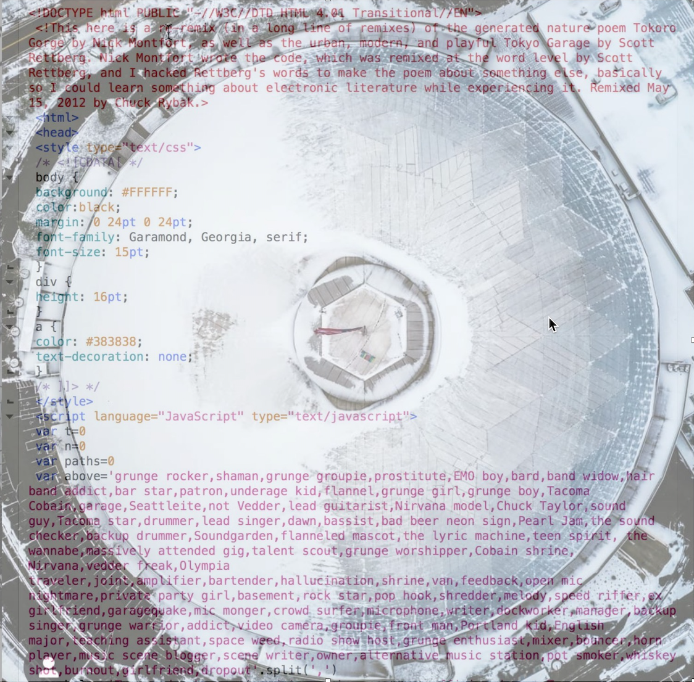
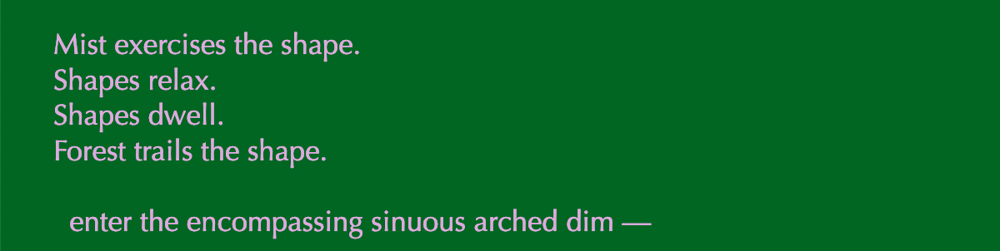
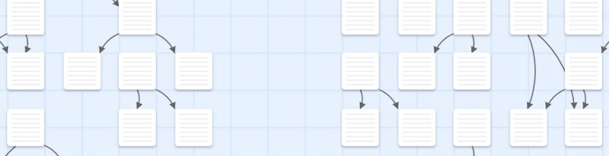
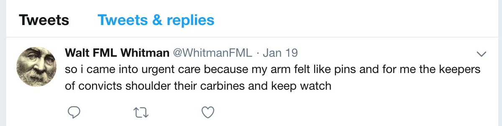

“…the goal of [electronic literature] remains consistent: to manipulate language, to transform the linguistic into the literary by means of computation…” -- Davin Heckman & James O’Sullivan
English 249 is a course designed to explore special projects in creative writing. This specific iteration of the course is about electronic literature. A key question guiding our work will be: What possibilities exist when the computer becomes an essential part of the asethetics of a literary work? To explore this question we will remix programs for generating poems, compose works of interactive fiction, and make literary bots. Throughout these projects you will document your composing and research processes, reflect on what you learn, and share your work within a community of peers.
This course is novice-friendly. No knowledge of computer programming required. If you are able to compose and edit text in an electronic document (MS Word, Google Doc, etc.) you have the technical competency required for this course.
I look forward to working and experimenting alongside you.
Questions? Get in touch: jloan@pierce.ctc.edu or stop by my office in Cascade 357.
My office hours this quarter are Monday thru Thursday from 1 - 2 or by appointment.
The course consists of three major projects:
Project 1: Remixing Taroko Gorge
Week 1
M April 8: Intros/Syllabus
T April 9: Set-up Research Logs
W April 10: Read (before class): Heckman and O'Sullivan's "Electronic Literature: Contexts and Poetics" | Read (in class): Self-selections from "Electronic Literature Collection"
TH April 11: Read (before class): "Electronic Literature Timeline" | Share/Discuss readings
F April 12: Research Logs DUE | Assessments and self-evaluations
LOG FOR WEEK 1: Introduce yourself. Entering the class chances are you have little or even no experience with Electronic Literature. What are you initial feelings, assumptions, wonderings as we begin class? Having read Heckman and O'Sullivan's "Electronic Literature: Contexts and Poetics" and "The Electronic Literature Timeline" -- what are your initial take aways? Describe your experience reading selections from the ELO's "Electronic Literature Collection" -- what do you make this work of electronic literature? What connections might you make between your initial assumptions or ideas about this this class or about "literature" or "creative writing" and your experience reading the text you selected? Finally, as best you can, attempt to articulate what you think you've learned this week.
Week 2
M April 15: Intro Project 1 - "Remixing Taroko Gorge" | Read (before class): Nick Monfort's "Taroko Gorge" and its remixes
T April 16: Workshop: Discuss Taroko Gorge and remixes
W April 17: Workshop: Modifying a Program
TH April 18: Workshop: Modifying a Program (cont) | Initial "Taroko Gorge" mods DUE
F April 19: Research Logs DUE | Assessments and self-evaluations (in class)
LOG FOR WEEK 2:
- Again, we discussed the question what is literature? Now that you've made your own remix(es) of Monfort's Taroko Gorge, do you have any new insights or thoughts about this question, particularly as it might appl to electronic poetry? I mean, can something that deploys a gif be considered literature? ;-) Why? Why not?
- Of what you read, which is your favorite remix of Taroko Gorge? Why?
- As we begin or own remixes of Monfort's poem, describe your experience at peaking "behind the curtain" and tinkering with his text.
- Again, as we begin our own remixes of Monfort's poem -- what are initial ideas for how to approach the project? What sense, if any, do you have of your own potential poem?
- I haven't officially assigned any reading from The Virtual Muse yet, as I wanted to give you some initial experience in tinkering with a poetry program to help contextualize that reading a bit. You may, however, have gotten a start in reading it. I'm curious -- what's your initial take aways? What's most interesting/perplexing?
- Finally, what do you think you've learned this week?
Week 3
M April 22: Begin further tweaks of TG remixes
T April 23: Workshop: Outcome-based Tweaks
W April 24: Workshop: Outcome-based Tweaks (cont)
TH April 25: Workshop: Outcome-based Tweaks (cont)
F April 26: Research Logs DUE | Assessments and self-evaluations | NO CLASS MEETING -- I'll be in Yakima for a meeting
LOG FOR WEEK 3:
- Now that you've made your own electronic poem -- revisit the questions what is literature? Your remixes are made from potentialy very untraditional materials. Lanuage, sure. But also gifs and images and, as we've seen -- computer code. How has the experience of making these affected your sense of how we think about literarure and what it is.
- Of your peers' remixes of Taroko Gorge, which is your favorite? Why?
- I have asked you to take ownership of your remix, to approach each element of it with intentionality. Discuss your rationale for the choices you made in composing your TG Remix. For example, why that font? Background color? Language choices? Use of imgaes and gifs?
- How do you feel about your own modifications/remix? Are you willing or interested in having it published via our class collection? Why or why not?
- Finally, as best you can, attempt to articulate what you think you've learned this week?
- What are you initial impressions of the IF genre?
- What is the story you hope to tell? Do you think that IF as a genre is capable ofbeing a medium for telling that story?
- What do find particularly intriguing or challenging or awesome or infuriating about the process (so far) of trying to tell a story in this way>
- Identify and employ structure and content in writing in various genres.
- Analyze and utilize writing techniques including deviations in grammar, mechanics, syntax, and organization.
- Employ theme in various genres.
- Identify and utilize dialogue and dialect in genre writing.
- Analyze and utilize character and point of view in genre writing.
- Identify and develop voice in individual writing.
- Identify and employ description, images and sound in genre writing.
- Evaluate published and peer - written genre writing for literary quality.
- Articulate and apply specific criteria for evaluations of quality.
- Explain process of submitting genre writing to journals, publishers, production companies, etc.
Project 2: Composing Interactive Fiction
Week 4
M April 29: Intro to Interactive Fiction/Storytelling | Workshop: Mark Marino's "Create Your Own Text Adventure"
T April 30: Workshop: "Create Your Own Text Adventure" (cont.)
W May 1: Workshop: "Create Your Own Text Adventure" (cont.)
TH May 2: Workshop: Intro to "Twine"
F May 3: Research Logs DUE | Assessments and self-evaluations | NO CLASS DISTRICT WIDE -- In-service Day
LOG FOR WEEK 4: TBD
Week 5
M May 6: (before class) Read "Twine, The Video Game Technology for All" and Porpentine's "All I Want is For All My Friends To Become Insanely Powerful" and Dan Waber's "A Kiss" and Emily Short's "Galatea" (scroll down to bottom of Short's portfolio)
T May 7: Workshop: Emily Short's "IF Party Game"
W May 8: Workshop: IF Project Drafting
TH May 9: (before class) Read Ch 1 - 2 in The Virtual Muse | Workshop: IF Project Drafting "Twine"
F May 10: Research Logs DUE | Assessments and self-Evaluations
LOG FOR WEEK 5:
For you research log this week, tray to reflect on and document your initial work in composing your own pierce of interactive fiction. Here are a few questions that might guide you:
Project 3: Making a (Lit) Bot
Course Outcomes
Course Logistics: Fort Steilacoom | Daily (M - F) | SNR 112 | 12:00 - 12:50
Questions? Get in touch: jloan@pierce.ctc.edu or stop by my office in Cascade 357